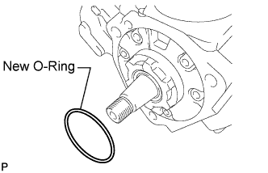
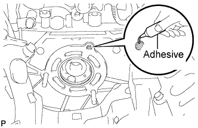
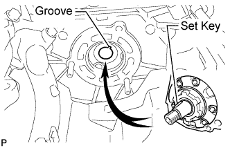
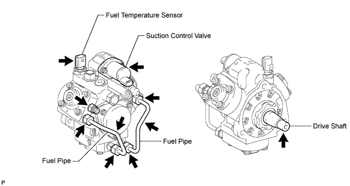
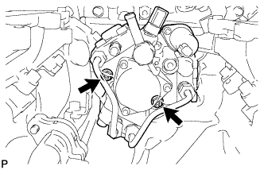
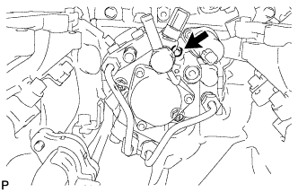
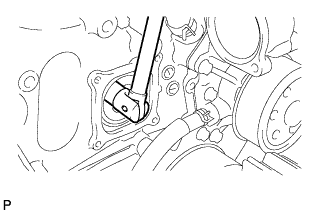
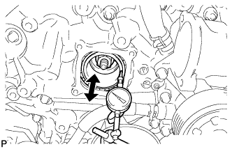
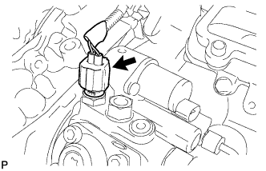
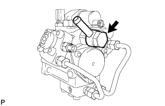

FUEL SUPPLY PUMP > INSTALLATION |
| 1. INSTALL FUEL SUPPLY PUMP |
 |
Install a new O-ring to the supply pump.
Apply a light coat of engine oil to the O-ring.
 |
Using an 8 mm x 1.25 pitch tap, remove the adhesive from the timing gear case side bolt hole.
 |
Apply adhesive to 2 or more threads as shown in the illustration.
 |
Align the set key on the drive shaft with the groove of the supply pump drive gear.

 |
Temporarily install the fuel supply pump with the 2 nuts.
 |
Using a 6 mm hexagon wrench, install the bolt.
Tighten the 2 nuts.
 |
Using a wrench, hold the crankshaft.
 |
Install the set nut.
Turn the crankshaft 2 times, and check that there are no problems.
 |
Using a dial indicator, check the thrust clearance of the supply pump drive shaft while moving the pump drive shaft gear back and forth.
 |
Connect the fuel temperature sensor connector.
| 2. INSTALL NO. 1 FUEL PIPE |
 |
Install 2 new gaskets and the No. 1 fuel pipe with the union bolt.
| 3. INSTALL TIMING CHAIN COVER PLATE |
 |
Install a new gasket and the cover plate with the 4 bolts.
| 4. INSTALL TIMING GEAR COVER INSULATOR |
 |
w/o Viscous Heater:
Install the timing gear cover insulator with the 2 bolts.
 |
w/ Viscous Heater:
Install the timing gear cover insulator.
| 5. INSTALL FUEL COOLER ASSEMBLY |
Install the fuel cooler assembly (Click here).
| 6. INSTALL THERMOSTAT |
Install the thermostat (Click here).
| 7. CONNECT CABLE TO NEGATIVE BATTERY TERMINAL |
Connect the cables to the negative (-) main battery and sub-battery terminals.
| 8. FUEL SUPPLY PUMP INITIALIZATION |
Initialize the fuel supply pump (Click here).